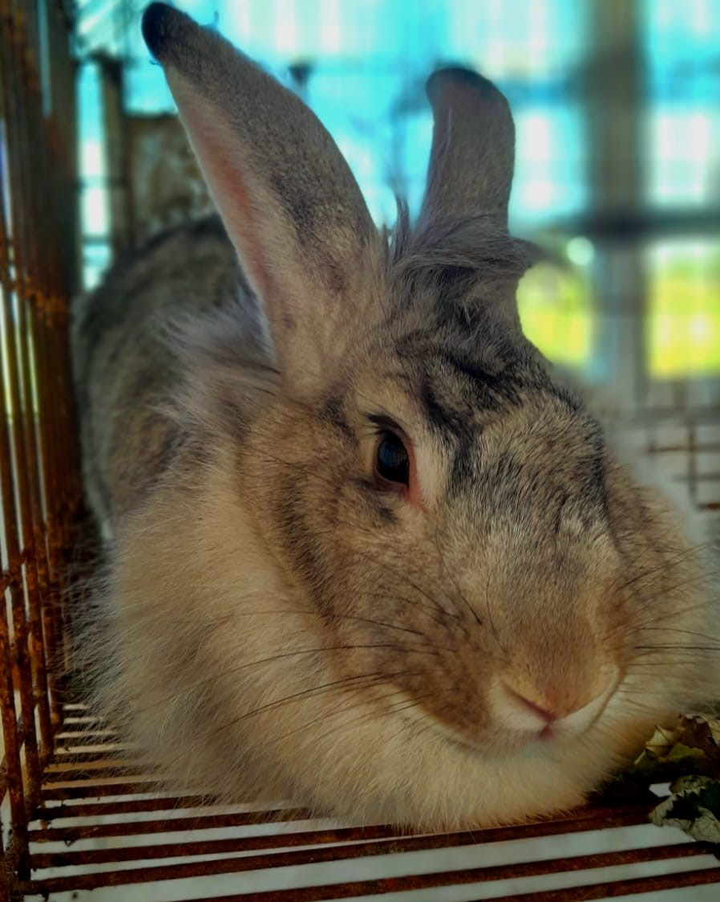
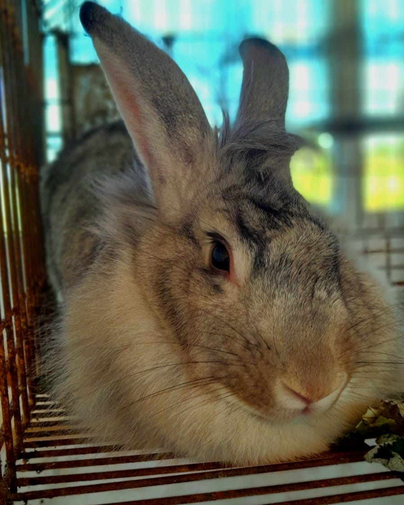

Relatório da viagem técnica
Durante a visita, nós, do terceiro ano A do curso técnico de Informática, tivemos a oportunidade de conhecer alguns dos diversos projetos criados e gerenciados pelos professores e alunos do IFRO Campus Colorado, nos quais alunos de todos os cursos disponibilizados podem participar e ajudar os projetos a serem desenvolvidos em prol do bem para a sociedade geral do IFRO e também do próprio Campus. Durante a fala do professor e diretor Glauber foram-nos apresentado o projeto "Câmera Escura: educação, mídias e tecnologia." O Câmera Escura é um grupo de pesquisa que utiliza das diversas tecnologias para criar produtos relacionados a melhora do ambiente educacional. Chamou-me especialmente a atenção, o projeto que deu início ao Câmera Escura: projeto judô. Com a intenção nobre de ensinar uma arte marcial com acessibilidade para todos os alunos e comunidade externa (através do Youtube), a produção do material didático áudiovisual foi um desafio mas uma grande satisfação para os envolvidos, contou Glauber. Contudo, o Câmera Escura não parou no projeto judô, mas se estendeu para outras áreas mais específicas dentro da realidade do Campus Colorado e seus cursos técnicos e graduação.
Projeto Ensilagem, SilagemBR e IFRO Mobile
Além do projeto judô, que deu início ao Câmera Escura, outros projetos foram desenvolvidos dentro do Campus para atender as necessidades e proporcionar aprendizado e melhora nos diversos cursos. O projeto Ensilagem é uma pesquisa científica no qual visa a produção de conteúdo sobre silagem para disponibilizar, principalmente, aos produtores. Esse foi um projeto que demandou grande esforço dos envolvidos já que eles precisavam produzir as próprias animações, inicialmente em 2D e depois em 3D, e todo material de explicação visual gráfica além das gravações em pessoa. Já o projeto SilagemBR, consistia, igualmente, na produção de conteúdo a respeito da silagem, porém, com um difirencial: a plataforma e a maneira de disponibilizar o conteúdo. O projeto SilagemBR é um podcast que conta com áudios, principalmente, e também com vídeos, sendo assim, é um projeto muito semelhante ao Ensilagem. Por último, o projeto IFRO Mobile, é um dos mais interessantes para nós da área de informática, pois pudemos ver e entender, através da explicação do professor, a aplicação da programação na prática além de toda estrutura do projeto que conta com os mais diversos requisitos, sendo eles, a maioria, advinda de conversas com os servidores e os próprios alunos. O projeto IFRO Mobile, começou a ser desenvolvido isoladamente pelo Campus Colorado pelo professor já que os alunos não tinham muita prática e aprendizado a respeito das formas de programação (o que foi se alterando com o tempo a medida que os alunos estudavam e aprendiam os conteúdos). O professor conta que o IFRO Mobile foi um sistema criado para exibição dos horários das aulas de forma mais descomplicada já que eles tinham o problema de alterar, muitas vezes, o horário das aulas e precisar espalhar boca a boca qual era o novo horário, o que causava grande transtorno pois alguns alunos saiam prejudicados por não estarem cientes a respeito da mudança. Sendo isso, tendo esse dilema em vista, o IFRO Mobile Campus Colorado estava sendo desenvolvido e juntamente com outro sistema que já estava sendo desenvolvido, o IFRO Mobile hoje possui uma estrutura que ajuda a prover as maiores necessidades, tendo um sistema avançado e simples de compreender.
 
